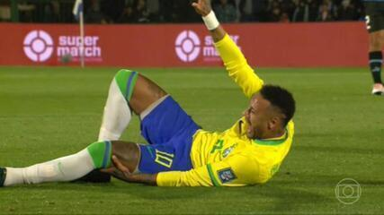

Neymar na Copa
Na Copa do Mundo de 2026, Neymar está vivendo uma situação diferente das edições anteriores.
Ele foi convocado por Carlo Ancelotti para disputar sua quarta Copa do Mundo. Apresenta "boa evolução", com expectativa de retorno durante a fase de grupos. Ele reassumiu a tradicional camisa 10 da seleção.
O próprio Neymar declarou que a Copa de 2026 deverá ser a última de sua carreira, mas desta vez o protagonismo é dividido com jogadores como Raphinha e Endrick.

A trajetória de Neymar em Copas do Mundo é marcada por um doloroso histórico de problemas físicos. Em 2014, uma grave fratura na vértebra lombar tirou o craque das semifinais, enquanto em 2018 ele chegou sem ritmo após operar o pé direito, e em 2022 uma contusão no tornozelo o tirou de dois jogos da fase de grupos.
No Mundial de 2026, o fantasma das lesões voltou a assombrar o camisa 10 da Seleção Brasileira antes mesmo da bola rolar. O atacante foi diagnosticado com uma lesão muscular de grau 2 na panturrilha direita, sofrida em maio durante uma partida pelo Santos, o que acendeu um novo alerta médico.
Por conta desse problema na panturrilha, o jogador acabou ficando de fora da partida de estreia do Brasil contra o Marrocos. Atualmente, ele segue em tratamento intensivo com a fisioterapia e corre contra o tempo para tentar retornar ao gramado na sequência da fase de grupos
Criado na Baixada Santista, Neymar começou jogando futebol de areia e futsal. Foi descoberto pelo olheiro Betinho aos 6 anos e lapidou sua habilidade de drible rápido nas quadras antes de chegar à base do Santos, aos 11 anos.
Estreou no profissional aos 17 anos (2009) e virou uma febre nacional. Com seus cabelos moicanos e dancinhas, liderou o Santos nas conquistas da Copa do Brasil (2010) e da Libertadores (2011), virando o maior jogador da América do Sul.
Em 2013, foi para o Barcelona, onde formou o lendário trio MSN com Messi e Suárez. Lá ele ganhou tudo, incluindo a Champions League de 2015, sendo o artilheiro do torneio.
Em 2017, protagonizou a transferência mais cara da história do futebol (222 milhões de euros) ao ir para o PSG, onde acumulou títulos nacionais, mas sofreu com lesões. Em 2023, transferiu-se para o Al-Hilal, da Arábia Saudita.
Conquistou o inédito Ouro Olímpico em 2016 e superou Pelé para se tornar o maior artilheiro da história da Seleção Brasileira masculina nas contas da FIFA.